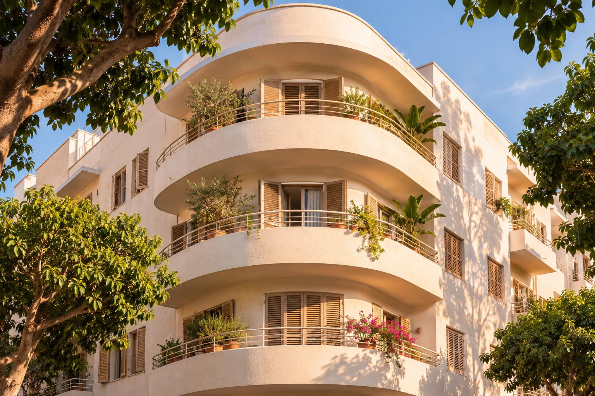

למכירה
למכירההצפון הישן · תל אביב
בזל
3 חדרים82 מ״רקומה 2
4,980,000 ₪נתוני הנכס לדוגמה
חזית שפונה לשדרה או סלון שפונה לחצר? נכיר את הדירה, נשווה לעסקאות ברחובות הסמוכים ונבחר יחד מחיר למכירה או להשכרה.

נבחר דירות דומות ונבדוק יחד מה הקומה, מצב הבניין והמרפסת מוסיפים להשוואה.
נחליט למי הדירה מתאימה, מה להדגיש במודעה ובאילו ערוצים לפרסם אותה.
נרכז את השאלות הפתוחות ונעביר את הפרטים לעורכי הדין לקראת גיבוש ההסכם.
מחיר במודעה משקף נקודת פתיחה. לפני קביעת מחיר כדאי להפריד בין דירות שמוצעות כעת לבין עסקאות שכבר נחתמו.
כמה פרטים על הדירה, וטווח ראשון לפי מחירים לדוגמה בשכונה. להערכה מדויקת נפגשים בדירה ומשווים לעסקאות שנחתמו ברחוב.